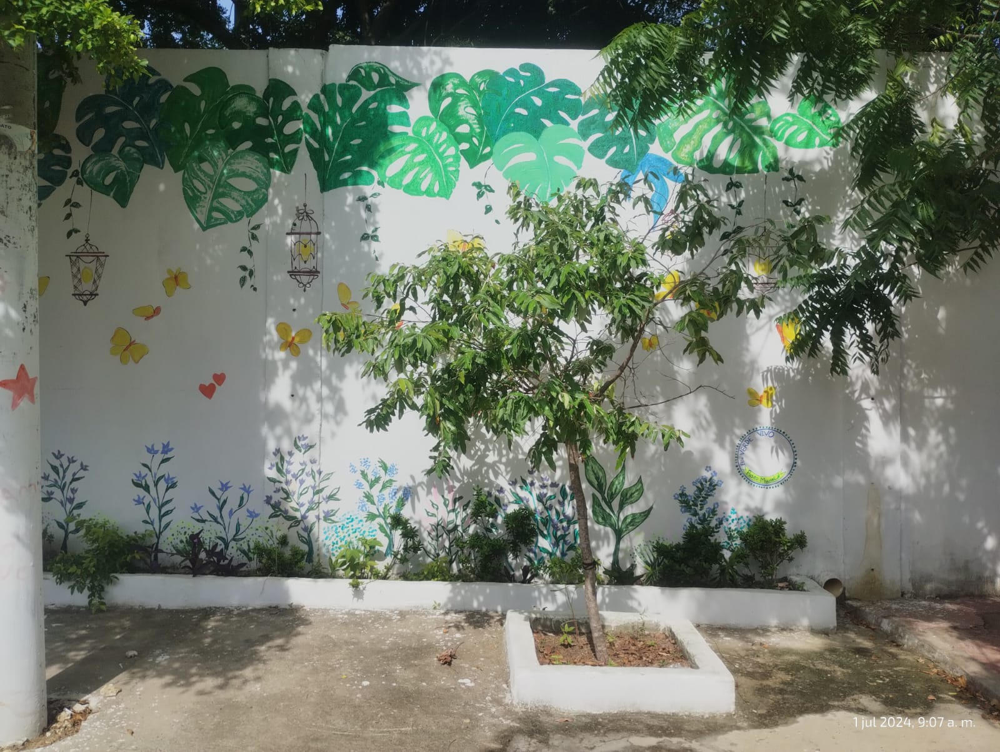

Resultados del Proyecto

Más de 10 murales comunitarios co-creados.

Participación activa de 80 personas entre niños, jóvenes y adultos.

Formación en educación ambiental en 5 localidades.
Kelly Montes Buelvas - Magíster en Educación Ambiental
Un proyecto que une arte, educación ambiental y comunidades desde la metodología de acción participación.
Más de 10 murales comunitarios co-creados.
Participación activa de 80 personas entre niños, jóvenes y adultos.
Formación en educación ambiental en 5 localidades.